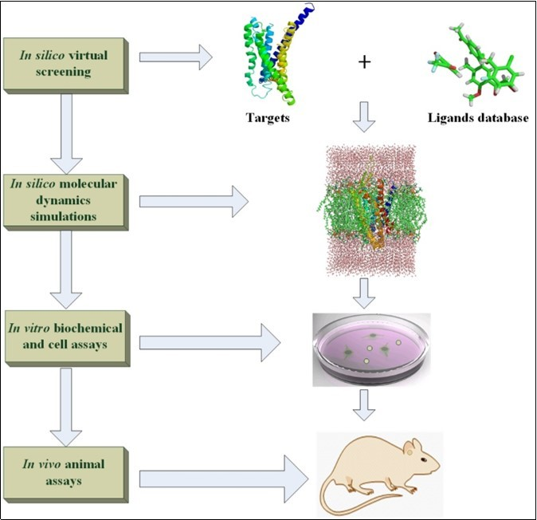

Molts fàrmacs que tenim a l'actualitat provenen de plantes medicinals. Per exemple, la marca registrada de medicament aspirina conté com a fàrmac àcid acetilsalicílic. A Espanya hi ha 17 medicaments que contenen àcid acetilsalicílic segons la base de dades CIMA
L'àcid acetilsalicílic deriva de la salicina que es troba a l'escorça dels arbres del gènere Salix i s'ha utilitzat des del temps dels egipcis i Mesopotàmia.L'escorça de salze encara es ve i està autoritzada per l'Agència Europea del Medicament, que diu que ha de contenir un mínim de 15% de salicina i es pot utilitzar amb un ús mèdic ben establert (well stablish used) en cas de dolor a la part baixa de l'esquena en tractament curts.Els tractaments són curts i no es ven molt perquè provoca mal d'estómac i per aquest motiu a finals del segle XIX Bayer, que utilitzaba àcid salicílic va afegir-li el grup acetil perquè fes menys mal a l'estómac.

Imatge del taxol

Imatge del taxol
Als anys 60 a l'Institut Nacional del Càncer dels Estats Units va investigar milers i milers de plantes contra el càncer, i les posaven en uns cultius in vitro amb cèl·lules canceroses Hela (era una senyora anomenada Hellen que les seves cèl·lules encara es multipliquen en laboratoris de tot el món).
Van observar que els cultius cel·lulars morien quan afegien extractes del gènere Taxus i, amb molta feina, van aïllar el Taxol o paclitaxel, que s'utilitza encara molt contra el càncer.
Segons Newyon i Cragg (2020) en l'àrea del càncer, des del 1946 fins el 1980, dels 75 fàrmacs petits, 40, o 53.3%, són naturals o derivats de naturals. Fins a l'actualitat, els percentatges continuen sent alts.
A la base de dades CIMA que significa Centre d'Informació del Medicament del Ministeri de Sanitat
Hi ha més de 15.000 medicaments espanyols i segons el professsor hi ha només 131 a base de plantes. Alguns medicaments a base de plantes tenen ús mèdic ben establert i altres el seu ús es basa només a la tradició i la llei espanyola i europea obliga a dir si és tradicional o no. El motiu és que el pacient té dret a saber si l'eficàcia del medicament s'ha demostrat en estudis clínics o el seu ús es basa en que durant molts anys s'ha utilitzat tradicionalment (15-30 anys mínim).
En tots els estudis anteriors he de tenir tres grups de cèl·lules, de ratolins o de pacients. A un grup li donarem medicament, a un altre li donaré placebo (una càpsula amb midó, que no és actiu) i a un altre grup li donarem un medicament de referència conegut que funcioni. Hauré de comparar matemàtica i estadísticament qe hi ha diferències entre els grups tractats.
